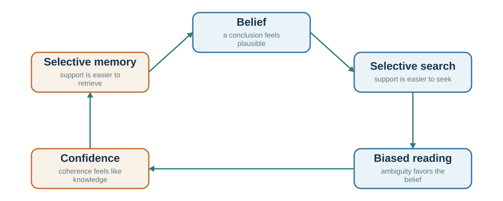

10 Confirmation Bias and Motivated Reasoning
Beliefs That Defend Themselves
“The human understanding when it has once adopted an opinion … draws all things else to support and agree with it.”
— Francis Bacon, Novum Organum, 1620, Book I, Aphorism XLVI
A project leader believes customers want a simpler app. She highlights complaints about confusing menus and dismisses requests for extra features as coming from unusual users. A colleague concludes that the app needs more capability, pointing to the same requests and calling the simplicity complaints minor.
Customer feedback should help the team decide what to build. Here, the colleagues use the same evidence to support opposing redesigns, each of which would consume time and money and could disappoint some users. Another collection of comments may leave both colleagues more convinced. Before gathering it, they need a test that could separate the explanations: what would each account predict that the other would not?
Learning goals
- Trace how an existing belief shapes search, interpretation, memory, and attribution.
- Distinguish confirmation, motivated reasoning, self-serving attribution, and correspondence bias.
- Separate biased evaluation of evidence from an expectation that changes the outcome itself.
- Build a structured disconfirmation protocol with a prediction recorded before discussion.
A bias label is useful when it identifies a process to examine. Calling the project leader “biased” explains little; comparing which comments she counts, which she dismisses, and what she predicted beforehand makes the disagreement open to investigation.
How beliefs shape the test
Chapter 5 asked whether acting on an expectation changes what happens. This chapter asks whether a belief receives a fair test. In the app example, the colleagues can interpret the same customer comments differently even when neither has changed the product or the customers’ experience. That is a problem of inference.
The two processes can then join up. A leader convinced there is no market for a feature may discount requests for it and refuse to develop it; interested customers leave, apparently confirming the initial pessimism. To investigate the first step, give independent reviewers the same comments and compare their coding. To investigate the second, compare outcomes under credible alternative product decisions. Biased interpretation and a self-fulfilling outcome require different evidence. Neither proves the other.

Finding what we expected can be reassuring evidence that a model works. In Figure 10.1, however, selective search, reading, and memory build confidence that feeds back into the same belief. That loop can keep a preferred account convincing without testing whether a rival works better.
Confirmation bias refers to patterns of search, interpretation, or memory that favor an existing belief (Nickerson, 1998). It can arise without deliberate distortion, as the favored explanation makes some questions easier to think of than others.
In Wason’s (1960) rule-discovery task, participants saw 2-4-6 and proposed further triples to discover the rule. Testing 4-6-8 may confirm “increase by two,” but also fits the broader rule “any increasing numbers.” A test such as 2-5-9 separates those accounts. Testing a predicted example is not inherently irrational; the weakness is choosing a test whose answer does little to distinguish the rival rules.
In another classic line of work, Lord, Ross, and Lepper (1979) gave people who supported or opposed capital punishment mixed evidence about whether the death penalty deters crime. Rather than moving toward each other, participants interpreted the evidence in ways that strengthened their original positions. Supporters saw the pro-deterrence study as stronger; opponents saw the anti-deterrence study as stronger. Participants reported greater polarization after considering the mixed evidence.
This pattern is sometimes called biased assimilation: people interpret evidence through their prior beliefs. It is related to myside bias, the tendency to evaluate evidence and arguments in ways that favor one’s own position. Across the tasks reviewed by Stanovich and colleagues (2013), the size of myside bias had little relationship with intelligence. Strong cognitive ability therefore gives us no simple assurance of impartial evaluation.
In the app example, each colleague can find genuine comments supporting a preferred explanation. The question is whether the same inclusion rules and standards of evidence were applied to both kinds of comment.
Belief protection becomes more consequential when beliefs are tied to identity, status, morality, or prior commitment. Kunda’s (1990) account of motivated reasoning explains how people can recruit plausible reasons for a desired conclusion. In Kahan’s (2013) study, greater cognitive reflection was associated with more ideologically patterned responses on the task examined. This is a separate claim from the weak intelligence–myside correlation: the question is how reasoning is being used in a particular setting. Chapter 7 examines the social work an explanation can do.
Beliefs need not concern a disputed policy to receive selective support. A vague description of ourselves can invite us to supply its confirming examples. The Barnum effect or Forer effect occurs when people accept general descriptions as uniquely true of themselves. Forer (1949) gave students a personality description supposedly based on a test, but actually composed of vague statements that could apply to many people. Students rated the description as highly accurate. Selective recall is one plausible contributor, alongside the breadth and favorable character of many statements. A horoscope, personality reading, or vague leadership profile can feel personal because the mind supplies the evidence.
For example, consider this invented description: “You enjoy company when you feel understood, but sometimes need time alone; you value independence while also caring how others see you.” Before treating it as insight, ask who it excludes. Contrasting tendencies cover many situations, and almost anyone can retrieve a matching episode. A useful assessment should distinguish among people or predict behavior under specified conditions. Recognition alone is an undemanding test. Chapter 29 contrasts such impressions with measured personality dimensions and evidence across repeated observations.
A fair test does not require abandoning a well-supported belief after one weak anomaly. The question is whether the new observation is more consistent with that belief or a plausible rival, given the quality of the evidence. Confidence should be difficult to move when the support is strong, not because an objection has been ruled out in advance.
For the app, define two predictions before reading another set of comments. If simplicity is the main problem, what pattern should appear? If missing capability is the problem, what different pattern should appear? The best next observation need not be hostile to a preferred belief; it must be informative about the alternatives.
Self-serving explanations
A project review should reveal what to repeat and what to change. That becomes harder when the same account also determines who deserves credit or blame: a flattering explanation can be personally useful while teaching the team the wrong lesson.
Self-serving attribution gives the self more credit for success than responsibility for failure. Mezulis and colleagues’ (2004) meta-analysis found this asymmetry across a broad literature, with substantial differences across populations and settings. Miller and Ross (1975) found stronger support for taking credit after success than for shifting blame after failure, and argued that expectations and information could explain some apparently self-serving judgments. Their skeptical question remains useful: did the explanation follow the evidence, or did its standards change to favor the self?
The narrator discussed in Chapter 7 adds a further problem: later knowledge can reconstruct the cause after choice. A forecast recorded before the outcome helps reveal both selective attribution and retrospective rewriting.
The project leader might credit strong sales to the design and weak sales to marketing. Either explanation could be true. The warning sign is an evidential standard that changes with whether the outcome flatters the decision-maker. A review should ask what the leader and external circumstances contributed to both success and failure.
Attribution: weighing the person and the situation
Attribution is the causal explanation attached to an action. A colleague misses a deadline. Was the cause carelessness, an impossible workload, ambiguous instructions, a dependency that failed, or a reasonable choice to protect a more important task? The observed behavior is the same. The implied remedy is not.
Jones and Harris (1967) separated a person’s apparent position from the freedom to express it. Participants read essays supporting or opposing Fidel Castro, then estimated the writer’s own attitude. Some were told the writer had chosen which position to defend; others knew it had been assigned. The assignment information reduced the inference, but did not eliminate it: even an assigned essay shifted judgments of the writer’s beliefs in the direction the essay defended. Observers noticed the constraint yet still treated the resulting behavior as evidence about the person.
The fundamental attribution error, also called the correspondence tendency, is the tendency to infer a stable personal disposition from another person’s behavior while giving too little weight to situational constraints (Ross, 1977). Dispositions can predict behavior. The error is concluding too quickly that behavior corresponds to character when the situation could have produced the same action.
One reason is an actor-information asymmetry. Actors can usually retrieve their intentions, pressures, instructions, incentives, and blocked options. Observers see the action more directly than the conditions that shaped it. This asymmetry helps explain why a character story can feel complete before the situational evidence has been collected.
The comparison with our own behavior provides a useful check. Would the same workload count as an explanation if we had missed the deadline? A different answer identifies a standard that should be made explicit and applied consistently.
Use an attribution audit before converting an action into a judgment of character:
- Describe the behavior without a trait word: “The report arrived two days late,” not “She is unreliable.”
- List at least two situational explanations and one dispositional explanation that could produce it.
- Apply the same evidentiary standard to yourself, the other person, and your preferred group.
- Identify the observation that would distinguish among those explanations—for example, performance across different workloads or instructions.
- Match the intervention to the supported cause: clarify the task, change the constraint, build a safeguard, or address a repeated behavioral pattern.
The audit reveals repairable systems and testable alternatives that a premature character verdict would hide.
When both sides feel objective
Negotiators who both want a fair settlement might expect that shared aim to help them agree. Yet knowing which side one represents can change what fairness appears to require, leaving both parties sincerely convinced that the other is unreasonable.
Babcock and Loewenstein (1997) reviewed research showing that disputants often interpret fairness in self-serving ways. When people know which side they represent, they tend to view fair settlements as more favorable to their own side. This can make bargaining harder, because each side sincerely believes its position is fair. In one study of settlement negotiations, participants who learned their role before reviewing case materials developed more self-serving assessments and settled less often than those who evaluated the case before knowing their role (Babcock et al., 1995).
For a negotiation, this means a sincere appeal to fairness may leave the disagreement unchanged. Parties also need to examine how they selected their standard and whether they would accept it from the other side.
A related bias is the bias blind spot: people tend to see biases more readily in others than in themselves (Pronin et al., 2002). We judge our own objectivity by introspection: “I do not feel biased.” We judge others by their behavior: “Their conclusion serves their interest.” Because biases often operate outside awareness, introspection is a poor detector. In Scopelliti and colleagues’ (2015) studies, a stronger bias blind spot was associated with placing less weight on other people’s estimates and responding less to debiasing training.
Before preparing another argument, ask each side to state the evidence and standard it would accept if the roles were reversed. The reversal can expose unequal standards; an agreed method of applying them gives the next conversation a way to make progress.
Make beliefs open to a fair test
Confirmation, motivated reasoning, and self-serving attribution differ in what they protect, but they share a process risk: search, interpretation, and explanation become easier in the direction of a preferred conclusion. The corrections in Table 10.1 make “be objective” testable by specifying what must be compared: rival predictions, evidence thresholds, causal standards, or situational explanations.
| Process risk | Story from the inside | Process correction |
|---|---|---|
| Confirmation / myside search | “The evidence keeps supporting us.” | Specify disconfirming evidence and assign the rival test to someone with permission to challenge. |
| Motivated interpretation | “This evidence is weak; that evidence is decisive.” | Apply the same relevance and quality threshold to congenial and uncongenial evidence. |
| Self-serving attribution | “Our success was skill; failure was circumstance.” | Apply the same causal standard to self, others, and rival groups. |
| Fundamental attribution error | “The action reveals the person.” | Compare dispositional and situational accounts using behavior across constraints. |
Confidence is a related but distinct forecasting problem. Chapter 15 turns confidence into a scored record. A strongly held belief might be accurate, overconfident, or selectively protected; those possibilities require different evidence.
Practice Lab
Choose one consequential belief held by you or a team. Produce a disconfirmation protocol with five entries: the current claim and confidence; the observation that would materially reduce confidence; the strongest competing account; a person assigned to develop that account without reputational penalty; and a dated prediction recorded before group discussion. Specify how each possible result changes action rather than merely the story.
Take it forward
The two colleagues do not need to agree that either is biased. They need to agree on what the next test will measure and how its possible results bear on their competing accounts. Write those commitments before examining the evidence, while a change of mind is still possible.
Chapter practice
References cited in this chapter
Babcock, L., & Loewenstein, G. (1997). Explaining bargaining impasse: The role of self-serving biases. Journal of Economic Perspectives, 11(1), 109–126.
Babcock, L., Loewenstein, G., Issacharoff, S., & Camerer, C. (1995). Biased judgments of fairness in bargaining. American Economic Review, 85(5), 1337–1343.
Bacon, F. (1620). Novum organum. https://constitution.org/2-Authors/bacon/nov_org.htm
Colvin, C. R., & Block, J. (1994). Do positive illusions foster mental health? An examination of the Taylor and Brown formulation. Psychological Bulletin, 116(1), 3–20. https://doi.org/10.1037/0033-2909.116.1.3
Forer, B. R. (1949). The fallacy of personal validation: A classroom demonstration of gullibility. Journal of Abnormal and Social Psychology, 44(1), 118–123.
Jones, E. E., & Harris, V. A. (1967). The attribution of attitudes. Journal of Experimental Social Psychology, 3(1), 1–24.
Kahan, D. M. (2013). Ideology, motivated reasoning, and cognitive reflection. Judgment and Decision Making, 8(4), 407-424.
Kunda, Z. (1990). The case for motivated reasoning. Psychological Bulletin, 108(3), 480-498.
Lord, C. G., Ross, L., & Lepper, M. R. (1979). Biased assimilation and attitude polarization. Journal of Personality and Social Psychology, 37(11), 2098–2109.
Mezulis, A. H., Abramson, L. Y., Hyde, J. S., & Hankin, B. L. (2004). Is there a universal positivity bias in attributions? A meta-analytic review of individual, developmental, and cultural differences in the self-serving attributional bias. Psychological Bulletin, 130(5), 711–747.
Miller, D. T., & Ross, M. (1975). Self-serving biases in attribution of causality: Fact or fiction? Psychological Bulletin, 82(2), 213–225.
Nickerson, R. S. (1998). Confirmation bias: A ubiquitous phenomenon in many guises. Review of General Psychology, 2(2), 175–220.
Pronin, E., Lin, D. Y., & Ross, L. (2002). The bias blind spot: Perceptions of bias in self versus others. Personality and Social Psychology Bulletin, 28(3), 369–381.
Ross, L. (1977). The intuitive psychologist and his shortcomings: Distortions in the attribution process. In L. Berkowitz (Ed.), Advances in experimental social psychology (Vol. 10, pp. 173–220). Academic Press.
Scopelliti, I., Morewedge, C. K., McCormick, E., Min, H. L., Lebrecht, S., & Kassam, K. S. (2015). Bias blind spot: Structure, measurement, and consequences. Management Science, 61(10), 2468–2486.
Stanovich, K. E., West, R. F., & Toplak, M. E. (2013). Myside bias, rational thinking, and intelligence. Current Directions in Psychological Science, 22(4), 259–264.
Taylor, S. E., & Brown, J. D. (1988). Illusion and well-being: A social psychological perspective on mental health. Psychological Bulletin, 103(2), 193-210.
Taylor, S. E., & Brown, J. D. (1994). Positive illusions and well-being revisited: Separating fact from fiction. Psychological Bulletin, 116(1), 21–27. https://doi.org/10.1037/0033-2909.116.1.21
Wason, P. C. (1960). On the failure to eliminate hypotheses in a conceptual task. Quarterly Journal of Experimental Psychology, 12(3), 129–140.